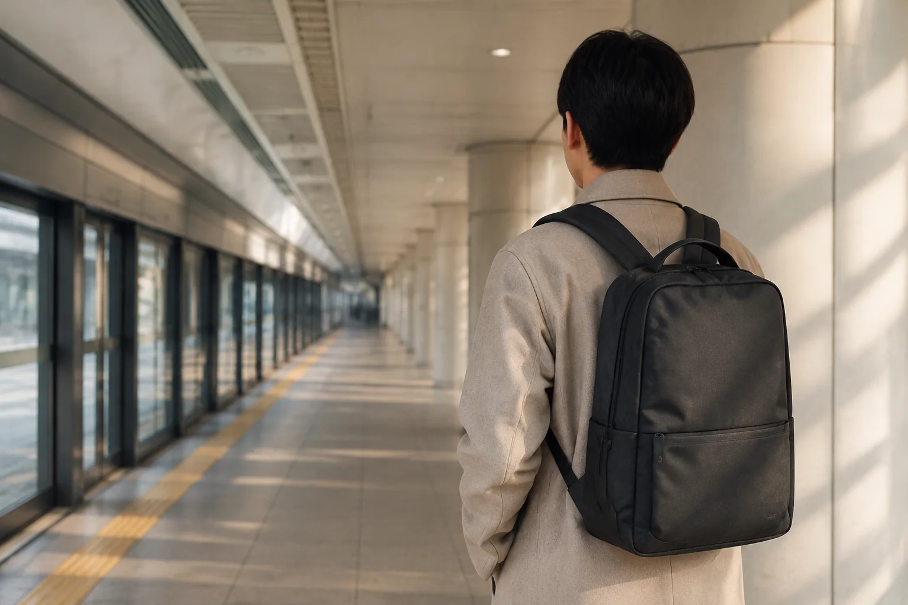

지하철 출퇴근 백팩 고르기: 폭·수납·여닫는 순서 점검표

지하철 출퇴근용 백팩은 단순히 많이 들어가는 가방보다 이동할 때 몸 밖으로 튀어나오는 부피와 물건을 꺼내는 순서가 잘 맞는 가방이 편합니다. 매일 같은 길을 오가는 만큼, 한 번의 수납량보다 반복해서 메고 내리고 여닫는 장면을 기준으로 살펴보세요.
1. 평소 짐을 넣은 뒤 가방의 폭을 보세요
빈 가방의 치수만 보지 말고 노트북, 충전기, 물병, 우산처럼 실제로 들고 다니는 물건을 넣은 상태를 상상합니다. 앞주머니가 여러 겹으로 부풀거나 물병이 옆으로 크게 튀어나오면 좁은 통로에서 움직일 때 신경 쓸 부분이 늘어납니다. 필요한 수납을 확보하면서도 옆과 뒤의 실루엣이 단정한지 확인하세요.
2. 등에 가까운 곳에는 평평한 물건을
노트북이나 서류처럼 넓고 평평한 물건은 가방이 안내하는 전용 수납칸을 우선 사용합니다. 단단한 충전기나 물병이 등에 직접 닿는 위치로 굴러오지 않도록 작은 파우치나 분리 포켓을 활용하세요. 전자기기와 물병은 서로 다른 구역에 두고, 물병 뚜껑이 닫혔는지도 출발 전에 확인합니다.
가방을 멘 뒤 한쪽으로 기울어 보인다면 양쪽 포켓의 무게와 어깨끈 길이를 함께 점검합니다. 끈 길이는 몸에 맞는 어깨끈 조절 5단계를 따라 조금씩 맞추면 됩니다.
3. 자주 쓰는 물건은 작은 동작으로 꺼내세요
교통카드, 이어폰, 사원증처럼 이동 중 자주 찾는 물건은 정해진 한 포켓에 둡니다. 중요한 것은 포켓 수가 많은가보다 가방 전체를 바닥에 내려놓지 않고도 위치를 기억할 수 있는가입니다. 출입구 앞이나 계단에서는 가방을 열지 않고, 이동을 멈출 수 있는 곳에서 물건을 꺼내는 습관도 함께 정합니다.
4. 메인 지퍼의 열리는 범위를 확인하세요
입구가 크게 열리면 내부를 한눈에 보기 쉽지만, 좁은 곳에서 크게 펼쳐야 한다면 출퇴근 장면과 맞지 않을 수 있습니다. 반대로 입구가 너무 좁으면 서류 모서리나 파우치가 걸릴 수 있습니다. 매일 넣는 가장 큰 물건이 자연스럽게 들어가고, 자주 쓰는 작은 물건은 별도 구역에서 찾을 수 있는 구성이 실용적입니다.
출근 전 30초 점검
- 오늘 쓰지 않을 물건을 뺐나요?
- 전자기기와 물병을 분리했나요?
- 교통카드와 사원증을 정해진 곳에 넣었나요?
- 모든 지퍼와 물병 뚜껑을 닫았나요?
- 양쪽 어깨끈 길이와 좌우 균형이 맞나요?
출퇴근 가방을 고르는 기준은 직업명보다 실제 하루의 짐과 이동 동선에서 나옵니다. 후보를 비교할 때는 제품별 크기와 수납 정보를 보고, 가장 자주 들고 다니는 물건부터 맞춰 보세요.
참고·안내
- Himawari 제품별 크기·수납 정보
- 사용할 전자기기의 실제 치수와 제품별 수납 가능 범위를 함께 확인해 주세요.
자주 묻는 질문
출퇴근 백팩은 작을수록 좋은가요?
크기보다 매일 가져가는 물건을 무리 없이 담고도 불필요한 여유가 남지 않는지가 중요합니다. 평소 짐을 직접 넣어 폭과 균형을 확인하세요.
노트북은 어느 수납칸에 넣는 것이 좋나요?
가방에 전용 수납칸이 있다면 제품이 안내하는 크기 범위 안에서 사용하고, 다른 단단한 물건과 직접 부딪히지 않게 분리하세요.
교통카드는 어디에 넣어야 편한가요?
가방을 크게 열지 않고 한 손으로 찾을 수 있는 고정된 작은 포켓이나 별도 카드지갑이 편합니다. 분실 위험이 있는 열린 외부 포켓은 이동 환경에 맞춰 판단하세요.